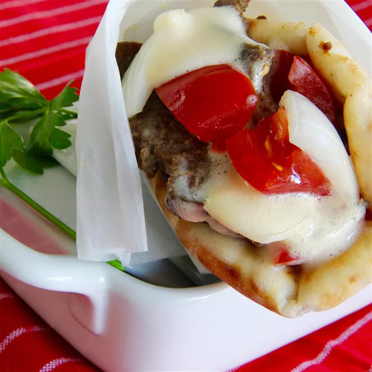

Home
Classic Beef Donair

Description
A very tasty version of the Turkish donair kebab originated from Halifax, Canada that only consists of 4 main ingredients: donair meat (spiced ground beef), toppings (tomatoes, onions, or lettuce), donair
sauce (made from sweetened condensed milk), and pita bread.
Ingredients
- 1 pound of ground beef
- 2 teaspoons of cayenne pepper
- 1 teaspoon of ground black pepper
- 1 teaspoon of onion powder
- 1 teaspoon of garlic powder
- 1 teaspoon of salt
- 1 teaspoon of paprika
- 1 teaspoon of dried oregano
- 1 (12 ounces) can of evaporated milk
- 1/2 cup of white sugar
- 1/4 cup of white vinegar or to taste
- 1 large pita bread
Steps
- Make the meatloaf: Mix ground beef, cayenne pepper, black pepper, onion powder, garlic powder, salt, paprika, and oregano together in a large bowl until combined. Shape mixture into a loaf and place
on a baking tray; cover with plastic wrap and let rest in the refrigerator overnight.
- Preheat the oven to 175 C degrees (350 degrees F).
- Bake meatloaf in the preheated oven until no longer pink in the center, about 30 minutes, turning the loaf over halfway through cooking. An instant-read thermometer inserted into the center should
read at least 70 degrees C (160 degrees F). Allow the meatloaf to cool so it holds together for slicing.
- Meanwhile, make the sauce: Stir evaporated milk and sugar together in a bowl until sugar is dissolved; add vinegar, 1 teaspoon at a time, to taste. Refrigerate sauce until ready to serve.
- Slice meatloaf into 1/4-inch thick slices; brown each slice in a skillet over medium heat until browned and crisp, about 5 minutes per side.
- Sprinkle pita bread rounds with a little water; warm briefly in a dry skillet over medium heat.
- To serve: Place several slices of meatloaf into each warmed pita bread; spoon about 2 tablespoons of sauce on top and roll into a cone shape. Wrap each donair in aluminum foil to keep the sauce from
dripping out; serve.